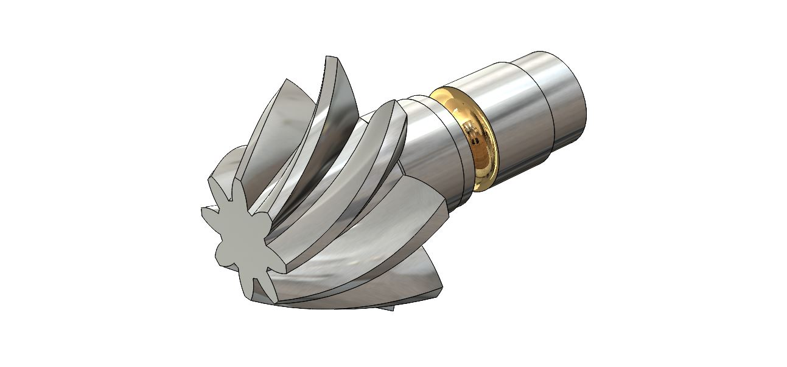
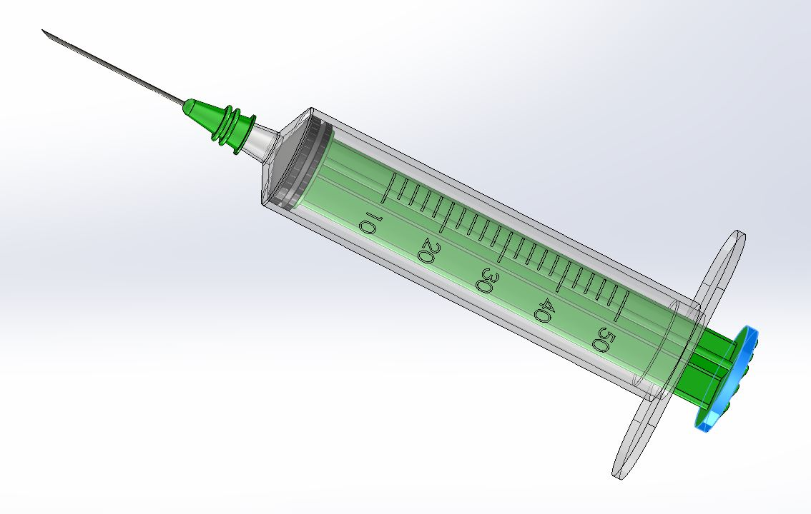

Harmony of the Seas is a remarkable cruise ship operated by Royal Caribbean International, renowned for being one of the largest and most innovative vessels in the world. Launched in 2016, this Oasis-class ship boasts a length of over 1,180 feet and can accommodate more than 6,700 passengers. Harmony of the Seas offers an array of entertainment and recreational features, including multiple pools, water slides, a zip line, and Broadway-style shows. With diverse dining options, luxurious accommodations, and cutting-edge amenities, Harmony of the Seas provides an extraordinary cruise experience, sailing to various destinations around the globe. Using SolidWorks the whole ship was designed. There was several parts and the ship was assembled using the assemble feature of SolidWorks
Bevel Gear
Bevel gears are a type of gear mechanism characterized by their conical shape and ability to transfer power and motion between non-parallel shafts. These gears have sloping tooth surfaces on the cone-shaped gear faces, enabling them to effectively change the direction of rotational motion. Bevel gears are commonly used in various mechanical systems, including automobiles, industrial machinery, and power tools, where changes in direction, torque, or speed are essential.
There are several types of bevel gears, such as straight bevel gears, spiral bevel gears, and hypoid gears, each designed to meet specific engineering requirements. Straight bevel gears have straight teeth and are commonly used when the shafts intersect at a 90-degree angle. Spiral bevel gears have curved teeth, reducing noise and improving efficiency by facilitating smoother meshing. Hypoid gears have offset shafts, allowing for more flexibility in design and often utilized in automotive applications.

Bevel gears play a crucial role in the optimization of power transmission and mechanical efficiency. Their applications range from automotive differential systems to marine propulsion, providing reliable and effective means of redirecting rotational energy in diverse engineering contexts. The design and application of bevel gears require precision engineering to ensure smooth operation, minimal wear, and optimal performance in various industrial and mechanical systems.
This Bevel Gear was designed using SolidWorks and it's loft/swift feature.
Syringe
A syringe is a simple yet essential medical device used for injecting or withdrawing fluids from the body. Typically consisting of a cylindrical barrel, a plunger, and a needle, syringes come in various sizes and designs to accommodate different medical applications. The barrel, often marked with volume gradations, holds the fluid, while the plunger is used to control the injection or withdrawal of the substance. The needle, attached to the barrel, facilitates the precise delivery of fluids into or out of the body.
Syringes play a pivotal role in healthcare settings for administering medications, vaccinations, and other medical procedures. The design and materials used in syringes have evolved over time, with modern syringes often featuring disposable, sterile components to minimize the risk of contamination and infection.
Key components of a syringe include:
1. Barrel: The cylindrical container that holds the medication or substance to be injected.
2. Plunger: A piston-like rod that fits into the barrel, enabling the controlled movement of fluids.
3. Needle: The slender, pointed tube at the end of the syringe, responsible for piercing the skin and delivering or extracting fluids.
Syringes are categorized based on their use and design, such as insulin syringes for diabetes management, tuberculin syringes for small-volume injections, and standard syringes for various medical procedures. Advances in syringe technology have also led to safety features, such as retractable needles or needle shields, reducing the risk of accidental needlestick injuries.
While syringes are commonly associated with medical applications, they are also utilized in laboratory settings for precise measurements and fluid transfers. The development of user-friendly, disposable syringes has contributed significantly to medical safety practices and the prevention of the spread of infectious diseases.
It is important to note that the use and disposal of syringes must adhere to proper medical guidelines to ensure safety and hygiene. The design and manufacturing of syringes continue to evolve, driven by the ongoing pursuit of improved functionality, safety, and user-friendliness in the medical field.
Designing a syringe with SolidWorks involves a systematic and detailed process to create an accurate and functional 3D model. Here's a step-by-step guide:
1. Sketching:
Begin by sketching the basic outline of the syringe on the SolidWorks sketching plane. Define critical dimensions such as overall length, diameter, and the shape of the plunger. Utilize the sketching tools to create circles, rectangles, and other geometric shapes.2. Extrusion:
Extrude the sketched profiles to create the main body of the syringe. This involves pulling the 2D sketches into the third dimension. Consider features like the syringe barrel, plunger, and nozzle, ensuring accurate dimensions and proportions.3. Adding Details:
Incorporate finer details such as volume markings, grips, and any additional features specific to the syringe design. SolidWorks allows for precise manipulation of geometry, enabling you to create intricate details that enhance both the aesthetics and functionality of the syringe.4. Assembly:
If the syringe is a multipart system (e.g., plunger, barrel, and nozzle), assemble these components together using SolidWorks Assembly features. Ensure proper alignment and functionality by simulating the movement of the plunger within the barrel.5. Material and Appearance:
Assign appropriate materials to each component of the syringe to simulate its real-world properties accurately. Adjust the appearance settings to add realism to the model, considering factors like transparency for the barrel and the color-coding of different parts.6. Analysis and Simulation:
Utilize SolidWorks Simulation tools to analyze stress, strain, and fluid flow within the syringe. This step ensures that the design can withstand operational stresses and helps identify potential issues that may arise during use.7. Documentation:
Generate 2D drawings and documentation for manufacturing. SolidWorks provides tools for creating detailed engineering drawings with dimensions, tolerances, and other specifications required for production.8. Testing and Iteration:
Conduct virtual testing by simulating the syringe's operation within SolidWorks. Evaluate factors like plunger movement, fluid flow, and overall ergonomics. If necessary, iterate on the design to address any identified issues or improve performance.9. Rendering:
Create realistic renderings of the syringe for presentations or documentation purposes. SolidWorks Visualize can be used to generate high-quality images that showcase the design's aesthetics and functionality.
By following these steps, designers can use SolidWorks as a comprehensive tool to create, analyze, and document a syringe design efficiently and accurately.